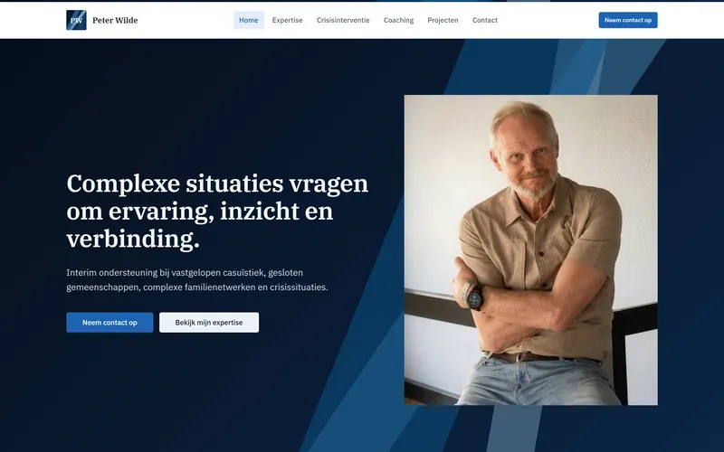
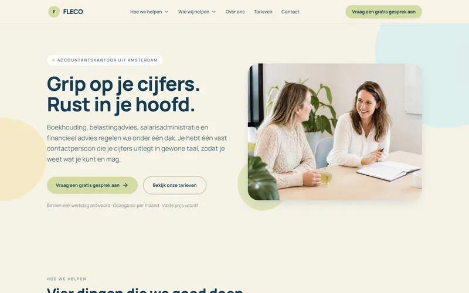
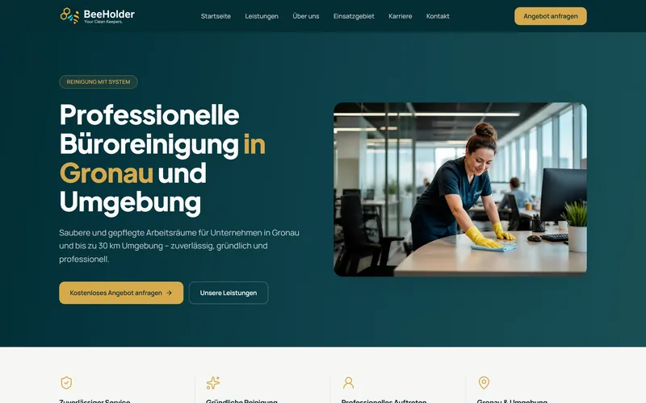

Só chegam clientes por indicação
O trabalho aparece pelo boca a boca. Quando a indicação para, o mês para junto — e você não tem outro caminho por onde os clientes cheguem.
Sites e SEO para você
Você tem um negócio e seus clientes não conseguem encontrá-lo no Google. Eu construo o seu site, e faço os seus clientes te encontrarem.
Você cuida do seu negócio. Eu cuido da sua presença online. Criação de sites profissionais e otimizados para o Google, conteúdo pensado para os seus clientes.

Trabalhos
Cada um feito na língua dos clientes de quem o encomendou.

Peter Wilde

Flecos

BeeHolder Cleaner
O problema
O trabalho aparece pelo boca a boca. Quando a indicação para, o mês para junto — e você não tem outro caminho por onde os clientes cheguem.
As pessoas procuram o seu serviço na sua cidade todos os dias. Encontram concorrentes que trabalham menos bem do que você, porque esses aparecem e você não.
Instagram é vitrine; site é endereço próprio. No Instagram você disputa atenção. No Google, você aparece para quem já está procurando.
Serviços
Três serviços. A melhor aliada do seu negócio.
O seu site profissional construído do zero e no ar em até 14 dias. Funciona bem no celular, carrega rápido e mostra o seu negócio como ele merece ser visto.
O seu site nasce construído da forma certa para o Google entender do que trata cada página e mostrá-la a quem procura o que você faz.
Já tem site e quer aparecer melhor nas pesquisas? Trabalho o SEO do que já existe, sem precisar refazer tudo. Falamos e vemos o que faz sentido no seu caso.
Como funciona
Você sabe desde o primeiro dia o que vai acontecer e o que se espera de você.
Dias 1 a 3
Uma conversa de 30 minutos. Você me conta do seu negócio, quem são os seus clientes e o que precisa que o site faça. Eu peço os textos, as fotos e o logotipo, se tiver. Se não tiver, resolvemos juntos.
Dias 4 a 10
Você não precisa fazer nada nesta fase. Eu monto as páginas, escrevo e organizo o conteúdo, e trato da parte técnica que faz o Google encontrar o site. Depois envio para você ver.
Dias 11 a 14
Você diz o que quer mudar — tem 2 revisões incluídas. Ajusto, publicamos, e configuro o Google My Business para o seu negócio aparecer também no Google Maps.
Para quem já tem um site no ar e quer que os clientes o encontrem.
Dia 1
Faço uma análise geral do seu site para saber onde estão os erros técnicos de SEO que precisam ser ajustados. Com isso, te dou um orçamento da análise de palavras-chave para iniciarmos o trabalho.
Dia 5
Aqui eu mostro o que será necessário para um trabalho mensal de impulsionamento do seu site. Faço uma pesquisa detalhada das palavras mais procuradas por quem busca o seu serviço, defino um caminho para chegarmos juntos a um resultado positivo o mais rápido possível, e apresento o plano mensal de SEO.
Dia 6
Com as alterações técnicas necessárias, criação de conteúdo profissional e backlinks — quando outro site menciona o seu —, a relevância do seu negócio começa a se construir. Nos primeiros três meses começamos a ver os primeiros resultados.
SEO
Muita gente diz que faz. Como você não tem como conferir, aqui fica exatamente o que está incluído no seu site — sem termos que você tenha de ir procurar.
No começo ninguém sabe quem você é. O seu nome não diz nada a ninguém, e a confiança ganha-se com tempo e presença. Com o Google acontece o mesmo: um site novo precisa de tempo para ser levado a sério, por melhor que esteja construído.
É esse o trabalho que continua depois da entrega, e é um serviço à parte do site. Só faz sentido quando você quiser dar esse passo — falamos quando for a hora.
Sobre mim
Se o português é a sua língua materna, você sabe bem do que eu estou falando.
Quando a gente dá aquele passo grande de se mudar para um país desconhecido, sabemos que a resiliência não tem que falar mais alto — tem que gritar. E empreender num país cuja língua você não entende parece impossível sem ninguém para ajudar.
Foi pensando nisso que a minha ideia de negócio surgiu. Afinal, eu já mudei de país três vezes em menos de 5 anos. Então eu entendo como é difícil recomeçar — e recomeçar em outra cultura, outra língua, sem nada do que nos é familiar, parece que estamos nascendo de novo.
Por isso, ajudar empreendedores — sejam brasileiros, portugueses, angolanos, moçambicanos — a construir o seu sonho é o meu propósito. Porque mais do que ninguém, eu sei que nós merecemos.
Preços
Promoção de lançamento
a partir de €199 €599 sem BTW
É uma promoção de lançamento, por tempo limitado e com um número reduzido de vagas por mês. Trabalho com poucos clientes de cada vez para entregar cada site com o mesmo cuidado — quando as vagas desta condição acabarem, o valor volta ao preço normal.
Manutenção do site — €19,90/mês opcional
Inclui a hospedagem, o domínio e a manutenção do site. Você não precisa contratar nem entender nada disso: eu cuido de tudo.
Se preferir tratar da hospedagem e do domínio por conta própria, também pode: ficam no seu nome, e eu ajudo você a escolher e configurar, em português.
Precisa de mais do que 5 páginas? Sem problema — faço um orçamento à parte e você fica sabendo o valor antes de decidir.
Sob consulta
Já tem site e quer aparecer melhor no Google? Cada caso é diferente, e não faria sentido inventar um preço antes de ver o que você tem. Falamos primeiro.
Simulador
Escolha o que precisa e veja o valor na hora. Sem deixar contacto, sem compromisso.
O seu site
a partir de €199
pagamento único, sem BTW
Isto é uma estimativa com os meus preços reais. O valor exato confirmo na conversa, antes de qualquer compromisso.
Diagnóstico
Três perguntas rápidas. No fim eu digo, com franqueza, o que faria no seu caso.
Pergunta 1 de 3
Pergunta 2 de 3
Pergunta 3 de 3
O que eu faria no seu caso
Perguntas
Meia hora de conversa, os textos ou as ideias do que quer dizer, algumas fotos e o logotipo, se tiver.
Se não tiver textos prontos nem fotos, diga. Isso não impede nada, resolvemos juntos na conversa.
Todo site precisa de hospedagem e de um domínio — o endereço do site, por exemplo www.oseunegocio.nl — para ficar no ar. Isso não está incluído no valor do site, e você tem duas formas de resolver.
Eu cuido de tudo por €19,90 por mês, sem BTW. Nesse valor entram a hospedagem, o domínio e a manutenção do site. Você não precisa saber nada de tecnologia nem resolver nada em holandês.
Ou você contrata por conta própria, direto com o fornecedor. Também nesse caso eu acompanho, ajudo a escolher e a configurar, sem custo adicional.
Depois das 2 revisões incluídas, sem a mensalidade, qualquer alteração é trabalho avulso. Funciona assim: você me diz o que precisa, eu digo quanto custa antes de começar.
Não tem contrato e não tem fidelização. A manutenção mensal é opcional e, se um dia você quiser parar, para.
É a ficha do seu negócio no Google. É o que faz aparecer, quando alguém procura pelo seu serviço na sua zona, um quadro com o seu nome, o horário, o telefone e o local no mapa.
Para quem trabalha com clientes da região, costuma ser o que traz mais contactos. Fica configurado no seu site sem custo adicional.
Fico em Enschede, mas trabalho à distância com todo o país. Nunca foi preciso estar na mesma cidade para fazer um site: combinamos tudo por chamada.
Atendo em português e em inglês. O processo inteiro — orçamento, dúvidas, revisões, entrega — corre na sua língua.
Meia hora, na sua língua, sem compromisso. Você conta o que faz, eu digo com franqueza se posso ajudar.
Prefere escrever? Mande mensagem no WhatsApp ou envie um email.